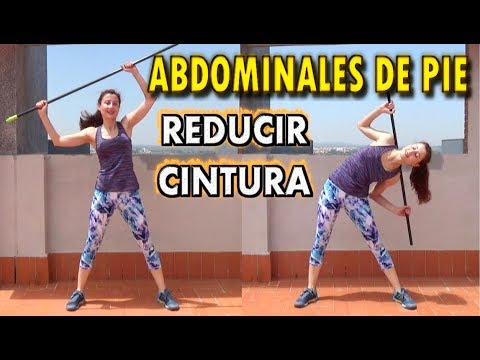
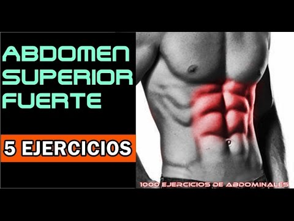

Ejercicios de abdominales efectivos
Homepage
Products
Services
Clients
Support
Welcome to Ejercicios de abdominales efectivos
2021.06.26 12:38


Menu
La ciencia reveló cuáles son los 7 ejercicios más efectivos .
Qué tipo de ejercicios abdominales son más efectivos y . - BBC
Los ejercicios para abdominales más efectivos según la ciencia
Estos son los 3 ejercicios más efectivos para marcar los .
Los 3 ejercicios más efectivos para eliminar la "pancita" y .
Los 5 abdominales más efectivos y más seguros - Sportlife
Los 5 ejercicios abdominales más efectivos y seguros .
Abdominales de pie. Qué son, cómo hacerlos y ejercicios
Estos son los 3 ejercicios más efectivos para marcar los .
Rutina de abdominales para mujeres que puedes hacer en casa
La ciencia reveló cuáles son los 7 ejercicios más efectivos .
6 jul. 2020 —
Qué tipo de ejercicios abdominales son más efectivos y . - BBC
Los ejercicios para abdominales más efectivos según la ciencia
Estos son los 3 ejercicios más efectivos para marcar los .
Los 3 ejercicios más efectivos para eliminar la "pancita" y .
Los 5 abdominales más efectivos y más seguros - Sportlife
Los 5 ejercicios abdominales más efectivos y seguros .
Abdominales de pie. Qué son, cómo hacerlos y ejercicios
Estos son los 3 ejercicios más efectivos para marcar los .
Rutina de abdominales para mujeres que puedes hacer en casa